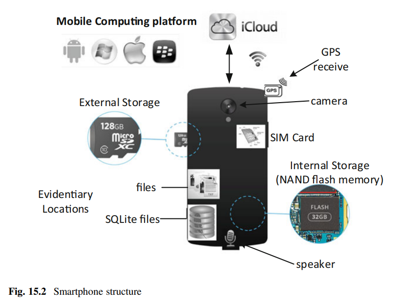
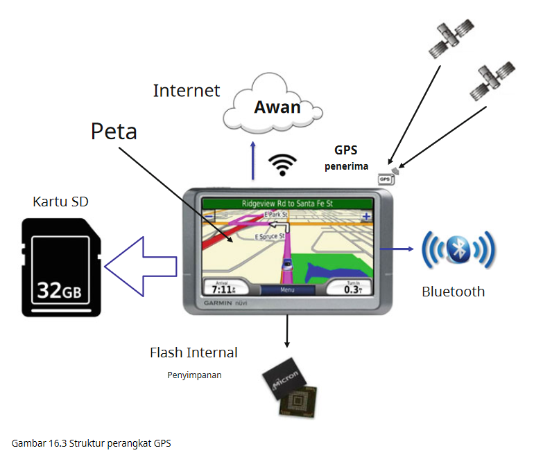
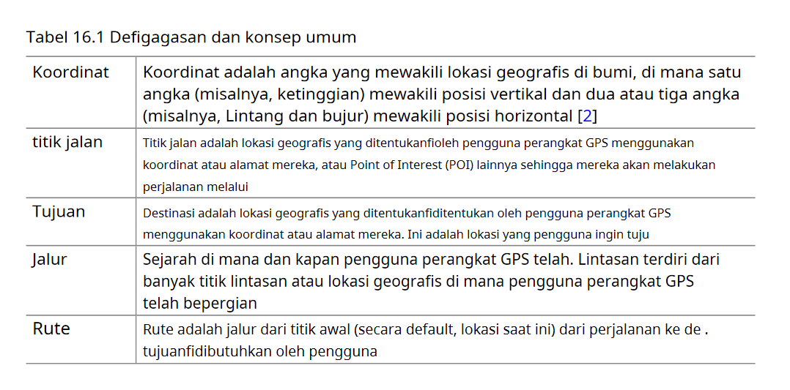
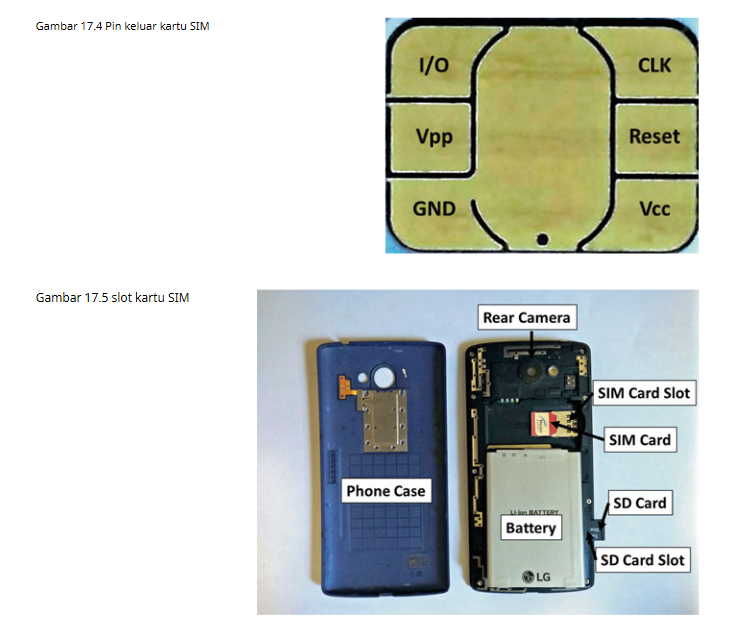
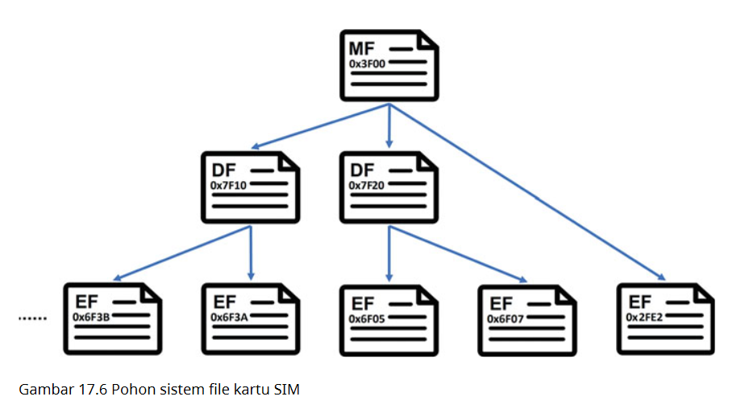
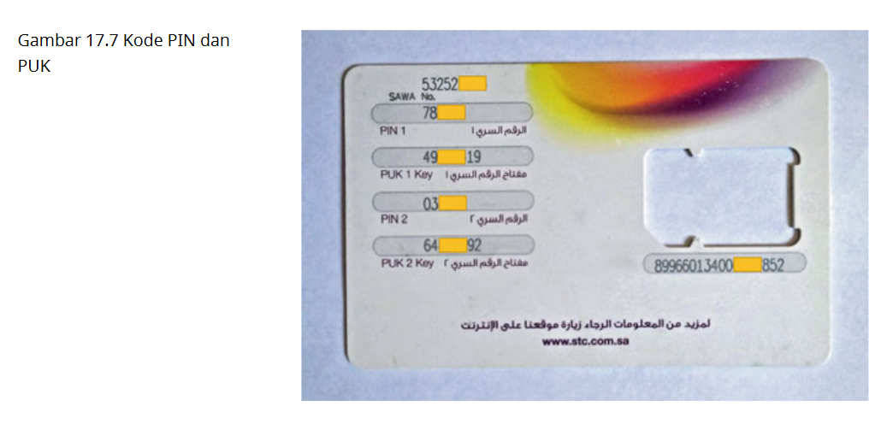

Smartphone memuat informasi yang lebih banyak daripada ponsel biasa (ponsel). Misalnya, banyak informasi dapat ditemukan di smartphone, seperti riwayat panggilan, kontak, kalender, SMS, MMS, aktivitas internet, foto atau video, lokasi GPS, data yang tersimpan di kartu SD, dll.

a. Processor
Dianggap sebagai otak dari smartphone. Contoh prosesor seluler adalah Apple's A8, Qualcomm's Snapdragon 810, dan Samsung's Exynos range.
b. Storage Memory
Smartphone modern menyediakan berbagai pilihan penyimpanan memori. Misalnya, Samsung Galaxy S7, perangkat Android, mendukung memori internal (memori internal atau penyimpanan internal) dan kartu microSD (penyimpanan eksternal). Selain itu, memori internal ponsel cerdas biasanya dipartisi menjadi dua bagian: Penyimpanan sistem dan Penyimpanan telepon.
c. Sensors
Tidak seperti komputer tradisional, semakin banyak ponsel pintar yang dilengkapi dengan berbagai sensor canggih, seperti akselerometer, kompas digital, gravitasi, giroskop, GPS, fingerprint sensor, dan termometer. Sensor ini memungkinkan smartphone untuk menangkap keragaman pengguna masukan serta lingkungan terdekat tempat mereka berada. Akibatnya, ponsel cerdas berisi banyak data yang semakin sensitif tentang penggunanya.
d. SIM Card
Sebagian besar telepon, khususnya telepon GSM, memerlukan kartu SIM (Subscriber Identity Module) untuk berkomunikasi dengan operator seluler. Ini digunakan untuk mengidentifikasi dan mengautentikasi pelanggan secara unik ke penyedia layanan seluler atau operatornya. Dengan kata lain, ini menghubungkan telepon ke pelanggan atau pengguna.
e. Network Connectivity
Karena Wi-Fi yang tersedia secara luas di smartphone saat ini, jumlah aplikasi jaringan melonjak. Misalnya, aplikasi jejaring sosial (misalnya, Facebook dan Twitter) sudah diinstal sebelumnya di sebagian besar ponsel cerdas. Selain itu, komputasi awan menjadi semakin umum di smartphone. Dalam komputasi awan, aplikasi dan penyimpanan data disediakan sebagai layanan kepada pengguna seluler melalui Internet.
f. Cameras and Speakers
Saat ini smartphone dilengkapi dengan kamera digital dan speaker.
a. Logical Image
Gambar logis dapat dianggap sebagai salinan dari file file dan folder dari penyimpanan perangkat. Ini berarti bahwa ketika data disalin, itu masuk akal, itu dalam bentuk yang dapat dikenali. File memiliki header yang tepat. File-sistem utuh. Namun, ini berarti bahwa semua yang dihapus file file, atau seperti “ruang yang tidak terpakai” tidak akan disalin. Ini bukan salinan lengkap dari sebuah partisi, melainkan salinan dari konten logis saat ini dari partisi tersebut (atau kumpulan folder). Manfaat dari gambar logis adalah mudah untuk dikerjakan. Semua file saat ini terdaftar, dan dapat segera dianalisis. Kelemahannya, sudah disebutkan, adalah bahwa beberapa informasi tidak dapat diambil kembali, seperti file dihapus.
b. Physical Image
Gambar fisik adalah salinan bit demi bit atau dump data dari perangkat penyimpanan atau partisi. Ini berarti bahwa semua data (apakah itu bagian dari gambar logis saat ini, atau file yang dihapus, atau “ruang kosong”) akan disalin, dan tidak ada yang akan hilang. Manfaat ini jelas: Konten yang telah diambil lebih besar daripada gambar logis. Oleh karena itu, data yang lebih berpotensi berguna dapat dipulihkan. Kelemahannya adalah potensi sulit dalam merekonstruksi data ini misalnya menggunakan metode seperti file ukiran.
- Chip-Off
Metode ekstraksi data ini rumit dan membutuhkan banyak pengetahuan teknis, ketangkasan, dan keterampilan untuk benar-benar membongkar perangkat seluler. Chip ini disolder ke papan sirkuit, artinya alat seperti besi solder diperlukan untuk mengekstrak chip flash secara fisik.
Kelemahan dari metode ini adalah potensi merusak flash chip saat mengekstraknya dari PCB. Kedua, membongkar smartphone dengan hati-hati bisa menjadi tugas yang memakan waktu. Jika ada batasan waktu yang ketat dalam investigasi, metode ini mungkin tidak cocok.
- JTAG (Joint Test Action Group)
JTAG adalah protokol komunikasi, sering didukung oleh prosesor untuk menyediakan akses ke fungsi debug/emulasi mereka. Dengan JTAG, Anda terhubung langsung ke perangkat CPU dengan menyolder mengarah ke bantalan JTAG tertentu pada papan sirkuit tercetak.
Beberapa kelemahan metode JTAG adalah sebagai berikut: Tidak semua perangkat mendukung JTAG; Koneksi Port Tindakan Uji mungkin susah untuk ditemukan, atau bahkan tidak disertakan pada PCB (dalam kasus terakhir, lead TAP perlu ditambahkan secara manual membuat metode ini lebih invasif); ekstraksinya sendiri relatif lambat, terutama jika mempertimbangkan ukuran penyimpanan internal smartphone modern.
Dua manfaat bersama dari kedua metode akuisisi Chip-Off dan JTAG adalah: Tidak diperlukan pengetahuan tentang kredensial kunci layar, karena data sedang diekstraksi dengan langsung berinteraksi dengan perangkat keras. Kedua, gambar fisik diperoleh, memberikan penyelidik informasi yang paling mungkin.
- Forensic Software Suites
Metode ini memungkinkan perangkat lunak forensik untuk mengambil beberapa data logis dari perangkat Android, namun hanya data yang dapat dibagikan oleh aplikasi tersebut. Ada banyak penyedia konten, yang mampu berbagi informasi seperti pesan SMS/MMS, kontak, log panggilan, dll.
Mereka tidak hanya menyediakan metode untuk mengekstrak data dari perangkat, tetapi juga menampilkannya dan menyimpannya dengan cara yang nyaman.
Namun, ada beberapa kelemahan suite perangkat lunak forensik komersial. Perangkat lunak ini bisa sangat mahal. Dukungan untuk perangkat baru mungkin agak lambat.
- ADB (Android Debug Bridge)
Ini adalah alat baris perintah yang memungkinkan komunikasi antara komputer Anda dan perangkat seluler Android (atau emulator). Metode akuisisi ini sangat dibatasi oleh dua faktor: apakah perangkat di-root atau tidak (harus dipulihkan ke “data pengguna” data partisi); apakah penyelidik memiliki pengetahuan tentang kredensial kunci layar. Karena keterbatasan ini, mudah untuk memikirkan banyak situasi di mana ADB tidak dapat digunakan untuk memulihkan konten.
- Backup Applications
Mekanisme ini tidak akan menyalin semua data aplikasi, karena hanya memiliki akses ke aplikasi data yang diprogram untuk dibagikan.
Sebuah manfaat dari metode ini adalah bahwa hal itu mudah. Satu hanya perlu menginstal aplikasi (dan mungkin kartu microSD), dan biarkan aplikasi melakukan tugasnya.
Ada juga banyak kelemahan dari metode ini. Pertama terkait dengan integritas perangkat. Terakhir, untuk menginstal aplikasi semacam itu, Anda harus memiliki akses ke perangkat (yaitu mengetahui kredensial kunci layar).
- Firmware Update Protocols
Para penulis ini mengambil temuan mereka dan menerapkan metode akuisisi ini dalam alat perangkat lunak yang disebut Android Physical Dump (APD). Mereka telah merekayasa balik program bootloader dan memperbarui banyak perangkat, dan menyertakan perintah terkait yang diperlukan untuk membaca memori dalam perangkat lunak mereka.
Tampaknya hanya ada beberapa kelemahan dari metode akuisisi ini. Pertama, ini membutuhkan waktu dan upaya untuk merekayasa balik bootloader dan perangkat lunak pembaruan firmware untuk perangkat yang berbeda. Kedua, metode ini tidak mungkin untuk semua perangkat.
Manfaatnya banyak dari metode ini. Ini menyediakan cara canggih untuk memulihkan informasi dari banyak ponsel pintar, tanpa memengaruhi perangkat integritas data. Juga, gambar fisik dipulihkan, yang menyediakan lebih banyak data daripada gambar logis. Berbeda dengan metode akuisisi perangkat keras, metode ini menyediakan cara untuk memulihkan citra fisik tanpa harus membongkar smartphone. Oleh karena itu, tidak ada kemungkinan merusak sirkuit internal secara fisik.
- Custom Recovery Image
Metode akuisisi terakhir yang akan kita bahas difokuskan pada partisi pemulihan dan mode pemulihan perangkat Android. Metode ini memang memerlukan modifikasi partisi pemulihan. Namun, sebagian besar konten yang menarik terletak di “data pengguna” partisi (seperti yang disebutkan sebelumnya adalah dipasang di “data”), dan dengan demikian memodifikasi partisi pemulihan tidak akan mempengaruhi data ini.
Ada beberapa kelemahan metode akuisisi ini. Pertama, gambar pemulihan khusus harus dibuat yang mendukung perangkat yang berbeda. Kedua, perangkat penyimpanan agak dimodifikasifi. Terakhir, perangkat boot-loader dapat dikunci, yang akan membuat proses ekstraksi lebih sulit.
Manfaat dari metode ini adalah sebagai berikut: Hal ini relatif lurus ke depan untuk mengeksekusi. Setelah gambar pemulihan khusus dibuat, langkah-langkah yang diperlukan untuk mengekstrak informasi menjadi sederhana. Dibandingkan dengan beberapa metode ekstraksi lainnya (misalnya aplikasi cadangan, suite perangkat lunak forensik), tingkat modifikasi perangkat lebih sedikit. Gambar fisik dan logis dapat diperoleh. Fleksibilitas sangat baik. Penyelidik dapat memulai dengan menganalisis gambar logis, dan kemudian menganalisis gambar fisik jika diperlukan. Terakhir, tidak diperlukan pengetahuan tentang kredensial kunci layar.
Setelah mengekstrak data dari telepon, sampai pada langkah analisis data untuk tujuan forensik. Pendekatan analisis data bervariasi dengan aplikasi Android seperti pesan instan, panggilan telepon, browser web, dan sebagainya. Dengan kata lain, setiap aplikasi memerlukan metode analisis forensik yang unik.
- Analisis informasi kontak: Informasi kontak memungkinkan penyelidik untuk menentukan dengan siapa pengguna melakukan kontak. Dengan menganalisis daftar kontak, stempel waktu kontak telah ditambahkan ke database, atau status yang diblokir dari kontak tertentu, perilaku pengguna atau informasi kontaknya diungkapkan kepada penyelidik.
- Analisis pesan yang dipertukarkan: Kronologi pesan yang dipertukarkan dapat direkonstruksi dengan menentukan stempel waktu dari pesan yang dipertukarkan, data yang dibawa, set pengguna yang terlibat dalam percakapan, dan apakah dan kapan pesan itu benar-benar diterima oleh penerimanya. Informasi ini memberi penyelidik hubungan pengirim dan penerima sampai batas tertentu.
- Analisis penghapusan: Dalam beberapa aplikasi, catatan yang dihapus disimpan di perangkat untuk jangka waktu tertentu. Misalnya, dalam database SQLite, penghapusan dapat dipulihkan dari apa yang disebut sel yang tidak terisi, yaitu ruang kosong yang disimpan dalam file yang sesuai dengan database. Penghapusan ini memberikan beberapa panduan untuk penyelidikan.
Forensik perangkat GPS dapat memberikan bukti penting dalam kasus pidana dan perdata. Beberapa perangkat GPS modern kami mencakup perangkat GPS portabel serta perangkat penerbangan dan kelautan.
GPS adalah sistem navigasi radio di seluruh dunia yang terbentuk dari konstelasi 27 satelit (24 beroperasi dan tiga tambahan jika satu gagal) dan stasiun bumi mereka yang mengelola satelit. Ada sejumlah aplikasi GPS; dua aplikasi yang paling populer adalah pelacakan GPS dan navigasi GPS. Keduanya beroperasi berdasarkan prinsip trilaterasi menggunakan satelit.
Perangkat GPS khas saat ini memiliki struktur logis berikut dan terdiri dari :
- Penerima GPS: Ini adalah unit elektronik yang dapat menentukan posisi pengguna saat ini melalui analisis gelombang radio yang dikirim oleh satelit GPS.
- Peta bawaan: Ini memberikan tampilan peta kepada pengguna dengan memetakan posisi yang dihitung menurut sinyal yang disiarkan oleh satelit ke lokasi fisik di dunia. Selain itu, dapat menentukan kecepatan pengguna sesuai dengan gerakannya. Selanjutnya, dapat menurunkan perilaku mengemudi pengemudi.
- Konektivitas jaringan: Saat ini perangkat GPS dilengkapi dengan berbagai teknologi nirkabel. Misalnya, Bluetooth menjadi sangat populer di smartphone saat ini. Ini memungkinkan perangkat GPS untuk dipasangkan dengan pengguna telepon. Sebagai hasilnya, perangkat GPS dapat terhubung ke Internet, menggunakan berbagai layanan cloud, misalnya, pembaruan peta otomatis. Namun, memilikinya adalah opsional.

Beberapa konsep penting dan definisi penting yang akan digunakan di seluruh bab ini disajikan dalam gambar tabel berikut sebagai referensi.

Format pertukaran GPS (GPX) adalah format data XML ringan untuk pertukaran data GPS (titik arah, rute, dan trek) antara aplikasi dan layanan web di Internet. GPX dirancang untuk menjadi format XML standar untuk merekam data GPS dan bertukar data GPS antar aplikasi.
a. Waypoint
Titik jalan dalam hal ini adalah lokasi di bumi yang disimpan pengguna dalam GPS. Sebagian besar, titik jalan berisi buku alamat sebagai entri. Keberadaan waypoint saja tidak berarti bahwa pengguna berada di lokasi tertentu. Waypoint dapat berupa lokasi yang dimasukkan pengguna yang ingin dinavigasinya, di masa mendatang.
b. Route
Jika pengguna ingin menavigasi serangkaian titik jalan dalam serangkaian titik jalan dalam urutan tertentu, maka itu adalah rute. Dengan kata lain, rute ditentukan oleh pengguna. Setelah mencapai titik jalan, unit memandu pengguna ke titik jalan berikutnya.
c. Track Point
Track point menunjukkan lokasi yang direkam oleh GPS mengenai lokasinya, asalkan unit dihidupkan dan telah membuat tautan satelit. Catatan ini membawa stempel waktu, garis lintang, garis bujur, dan ketinggian. Perpanjangan titik lintasan juga membawa informasi tentang kecepatan.
d. Track Log
Ini adalah daftar lengkap titik trek yang dibuat dan disimpan oleh unit saat perangkat GPS terkunci pada sinyal satelit dan bergerak. Ini adalah elektronik setara dengan meletakkan “jejak remah roti” untuk menandai jalan yang telah dilalui. Ini membantu pengguna untuk menelusuri kembali langkah-langkah tersebut. Dengan kata lain, ini memungkinkan pengguna untuk melakukan trek kembali.
e. Track Segment
Track adalah kumpulan dari track point, terdaftar dalam urutan yang dihasilkan. Daftar ini dapat dipecah atau dibagi menjadi dua atau lebih segmen trek yang terdaftar secara berurutan.
Modul identitas pelanggan atau modul identifikasi pelanggan (SIM), juga dikenal sebagai kartu SIM berisi data khusus yang berbeda dari data, yang ditangkap oleh akuisisi forensik perangkat itu sendiri.
SIM adalah singkatan dari 'Subscriber Identification Module" yang merupakan kartu elektronik kecil yang menyimpan identitas pelanggan yang merupakan pengguna telepon seluler resmi untuk jaringan seluler GSM. Selain itu, ia menyimpan kunci enkripsi yang digunakan dalam otentikasi pengguna di jaringan seluler. Kartu-kartu ini tersedia dalam berbagai ukuran seperti kartu SIM Mini, Mikro, dan Nano.
Kartu SIM seperti halnya sistem pintar apa pun terdiri dari prosesor, memori, dan sistem operasi.
Chip SIM yang sebenarnya ditutupi oleh bingkai plastik. Namun, hanya permukaan sambungan (ditunjukkan pada Gambar.17.4) terpapar ke dunia luar yang mengadakan komunikasi antara perangkat dan kartu SIM melalui antarmuka serial.
Slot biasanya terletak di bawah baterai perangkat atau di satu sisi perangkat yang dapat diakses menggunakan lubang pin seperti yang ditunjukkan pada Gambar.17.5.

Pohon sistem file kartu SIM memiliki tiga kelas pengidentifikasi, yaitu main file, file khusus, dan file dasar. Setiap pengidentifikasi sistem file memiliki header dan body. Pohon sistem file ditunjukkan pada Gambar. 17.6.

Seperti disebutkan sebelumnya, semua file MF, DF, dan EF adalah terkait dengan izin keamanan dengan berbagai tingkatan. Identifikasi Personal Number (PIN) digunakan untuk melindungi data pelanggan dimana kode ini (4-8 digit) digunakan untuk verifikasi. Namun, kode PIN digunakan di atas data pelanggan dan data sistem. Personal Unlocking Key (PUK) juga dikenal sebagai PIN Unblocking Key digunakan untuk mengatur ulang kode PIN yang terlupakan.

Untuk kartu SIM, kontak, log panggilan, dan pesan SMS disimpan di EF berkas sistem. Untuk menemukan bukti-bukti ini, data yang diekstraksi harus diterjemahkan untuk membantu penyidik membaca bukti-bukti yang diekstraksi.
a. Contacts
Kartu SIM mungkin berisi beberapa kontak tertentu yang berbeda dari kontak yang ditemukan di perangkat. Ini karena kartu SIM memungkinkan pengguna untuk menyimpan kontak langsung di dalamnya. Selain itu, perangkat telepon memungkinkan pengguna untuk memilih antara perangkat, kartu SIM, dan cloud untuk menyimpan kontak mereka.
b. Calls
Di perangkat ponsel, log panggilan keluar, masuk, dan tidak terjawab disimpan sementara hanya panggilan keluar yang disimpan di kartu SIM. Konfigurasi perangkat menentukan apakah log panggilan keluar akan disimpan ke penyimpanan kartu SIM atau tidak. Namun, log panggilan keluar pada kartu SIM bisa berbeda dan tidak sama dengan log perangkat.
c. SMS
Short Message Service (SMS) adalah salah satu yang penting diekstraksi dari kartu SIM. Pengguna dapat mengirim dan menerima teks bukti yang bisa berupa pesan berisi up containing hingga 160 karakter bahasa Inggris atau 70 abjad bahasa lainnya.
Dalam investigasi digital, akuisisi data adalah langkah penting, yang mengacu pada proses di mana data dalam perangkat digital atau jaringan apa pun diekstraksi dan disimpan dengan cara yang baik secara forensik. Data kemudian diproses untuk digunakan dalam analisis forensik. Di dalam studi kasus, kami menggunakan Cellebrite UFED Touch untuk mengekstrak Data SIM.
Setelah kami mengekstrak data dari kartu SIM, kami harus dapat menemukan data yang diperlukan seperti kontak, pesan yang dihapus, dll. Juga beberapa informasi dapat ditemukan di bagian sistem yaitu ICCID, IMSI, dan MSISDN. Namun, menemukan bukti yang diperlukan dari data yang diekstraksi tidak mudah karena file sistem kartu SIM seperti yang disebutkan sebelumnya.